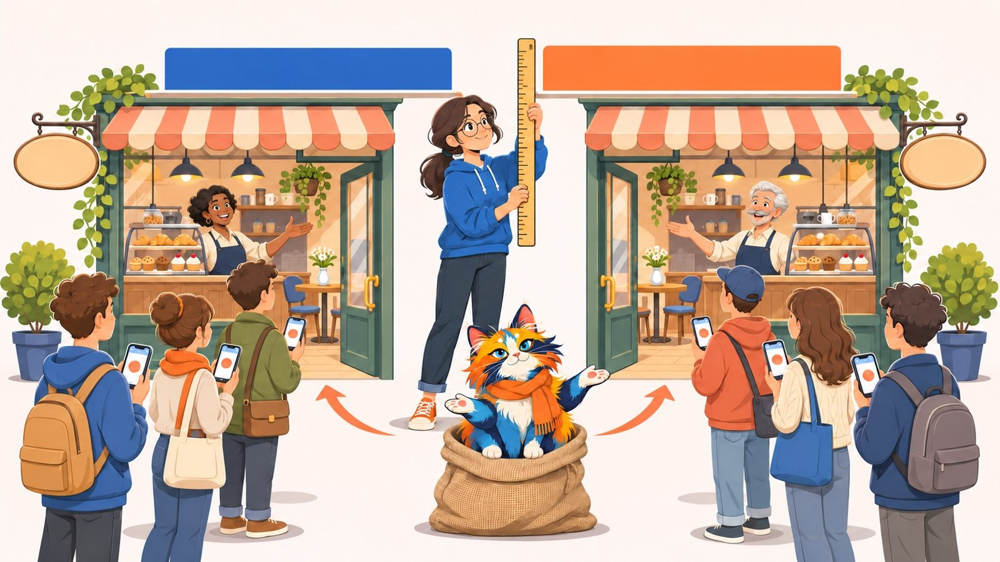
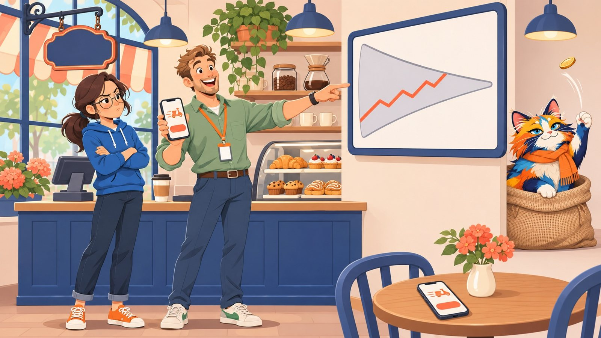
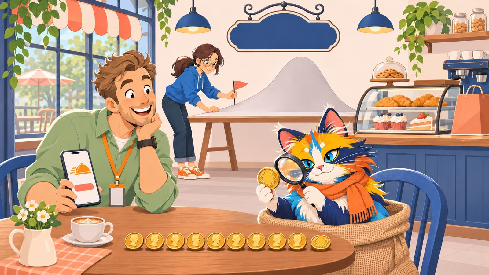

Две одинаковые группы дают разные цифры, потому что шумит каждая. Шум разности складывается из двух шумов, поэтому он больше шума одной группы — но не вдвое, а в √2 раз.
Сначала вспомним
σ чека — 400 ₽. Берём 1600 заказов. Насколько шумит их средний чек (стандартная ошибка)?
SE = σ/√n = 400/√1600 = 400/40 = 10 ₽. Это было в главе 7.
Алиса хочет, чтобы средний чек шумел вдвое меньше. Во сколько раз больше заказов ей нужно?
SE падает как 1/√n: чтобы √n выросло вдвое, n должно вырасти вчетверо.
Часть III · глава 9
A/A-тест
После главы ты сможешь посчитать SE разности двух групп и предсказать разброс A/A — и по нему проверить, что эксперимент считается правильно.

Разделим гостей на две группы и ничего не будем менять. Разница в конверсии всё равно будет. Какая она бывает — и почему это самое полезное число перед любым A/B?
- 1. Что здесь случайно?
- 2. Как распределено?
- 3. Центр и разброс
- 4. Насколько шумит среднее
- 5. Сколько стандартных ошибок до порога
- 6. Ответ бизнесу
В главе 7 мы считали шум одного среднего. Здесь — шум разности двух средних, когда эффекта нет совсем. Это и есть линейка, которой в главе 10 будем мерить настоящий A/B.
Разница, которой нет

Алиса, аналитик
Я неделю делила гостей приложения на две группы. Обеим показывала одно и то же. В первой заказали 10.0 из 100, во второй — 10.6.

Боб, продакт
Это баг! Если группы одинаковые, разница должна быть ноль.

Котейка
Мяу, это я раскладывал гостей монеткой. Кому-то просто захотелось кофе именно сегодня.
Алиса, аналитик
Это не баг, это линейка. Сейчас покажу, какой бывает разница, когда разницы нет.
Конверсия 10%, в каждой группе 10 000 гостей. Котейка 100 раз запускает такой A/A-тест.
Напиши число — на следующей карточке запустим стенд.
Стенд A/A
Каждый запуск — две группы одинаковых гостей. На гистограмме — разница «вторая минус первая» в заказах на 100 гостей. Серая кривая — колокол N(0, SE²), полоса — ±1.96·SE.
Теперь поменяй условие
Разницы между одинаковыми группами; полоса — ±1.96·SE
—SE разности, заказов на 100 гостей
—A/A за полосой ±1.96·SE
Идея из видео: Джош Стармер (StatQuest), «Sampling from a Distribution» (сэмплировать, чтобы проверить сам тест)
SE разности: шумят обе группы
История
В штуках
При 10% и 10 000 гостей в группе у одной группы SE = √(0.1 · 0.9 / 10 000) = 0.3 заказа на 100 гостей. У разности — 0.3 · √2 ≈ 0.42. В 95 A/A из 100 разница в пределах ±1.96 · 0.42 ≈ ±0.83 заказа на 100 гостей, то есть ±83 заказа на 10 000.
Формула
Var(p̂B − p̂A) = p(1 − p) · (1/nA + 1/nB)
SE разности средних = √(s²A/nA + s²B/nB)
P(|разница| > 1.96 · SE) ≈ 5%
Словами: дисперсии независимых групп складываются. Разница за 1.96·SE в A/A бывает в 5 тестах из 100 — это норма, а не баг.
Формула для средних — та же, что для долей: у доли s² = p(1 − p). Поэтому одну линейку можно приложить к любой метрике «на гостя»: конверсии, среднему чеку, числу заказов.
Без формул и с сеткой из 100 гостей — в «A/B на пальцах», шаг 3 «Шум есть всегда».
Фабрика p-value без эффекта
Для каждого A/A посчитаем p-value — вероятность при отсутствии эффекта увидеть разницу не меньше нашей (подробно — в главе 10). Если тест честный, в A/A все значения p от 0 до 1 одинаково вероятны: гистограмма ровная, в каждом столбике шириной 0.05 — около 5% тестов.
p-value в A/A-тестах, гистограмма
Баг «дубли событий»: каждого второго гостя логгер записал дважды. Формула думает, что наблюдений больше и они независимы, — и недооценивает шум. Ложных тревог становится около 13% вместо 5%, а у нуля вырастает пик. Ровная гистограмма p в сотнях A/A — главная проверка, что платформа считает правильно.
Идея из книги: Даниэл Лакенс, «Improving Your Statistical Inferences» («фабрика p-value»)
Боб смотрит накопленную разницу каждый день

Тот же A/A, по 2000 новых гостей в группу каждый день, 14 дней. Линия — накопленная разница «вторая минус первая», серая труба — ±1.96·SE на накопленных гостях: она сужается как 1/√n.
Накопленная разница A/A за 14 дней; труба — ±1.96·SE
В первые дни разница скачет сильнее всего, и путь легко «растёт» несколько дней подряд — это и есть тренд, которого нет. К 14-му дню за трубу выходит около 5% путей, как и обещано. Но если смотреть каждый день и останавливаться при первом выходе за трубу, «прокрасится» уже примерно каждый пятый A/A. Как подглядывать честно — тема курса «A/B без мифов».
Идея из подборки статей об онлайн-экспериментах (накопленный эффект A/A «растёт» несколько дней)
Двадцать метрик в одном A/A
В отчёте A/A у Алисы 20 метрик. Красная — разница за полосой ±1.96·SE. Запускай A/A и считай красные. Потом сделай метрики связанными: заказы, выручка и чек ведь двигаются вместе.
Сначала запиши догадку, потом проверь.
У независимых метрик в среднем красная одна, и хотя бы одна красная бывает в 64% A/A: 1 − 0.95²⁰ ≈ 0.64. У связанных в среднем тоже одна, но они краснеют пачками: чаще все серые, зато если уж покраснели — сразу несколько.
Свой стенд A/A
Напиши функцию: runs раз запускает A/A с конверсией p и n гостями в каждой группе, считает z = разница / SE и возвращает долю тестов с |z| > 1.96. Если всё верно, получится около 0.05 при любых p и n.
«Один A/A прошёл — всё в порядке»
Котейка
Мяу, я запустил A/A на новой платформе. Ни одна метрика не покраснела. Значит, платформа считает правильно, можно запускать A/B!
Что не так в выводе Котейки?
Один A/A ничего не доказывает: и у честной, и у сломанной платформы он обычно серый. Проверяют сотни A/A (или симуляцию на исторических данных): доля красных около 5% и ровная гистограмма p. Ещё одна проверка — доли групп: если при сплите 50/50 пришло 10 000 и 10 400 гостей, это подозрительно (z ≈ 2.8, p ≈ 0.005). Такой перекос называют SRM, sample ratio mismatch; подробно — в «A/B без мифов».
Две задачи про A/A
Схема ответа одна: переформулируй → посчитай в штуках → запиши формулу → проверь симуляцией → скажи вывод одной фразой.
Как распределены p-value в A/A-тестах? Что значит, если у нуля пик?
Переформулирую: эффекта нет, тест честный; как часто p меньше любого порога t?
В штуках: по определению теста при отсутствии эффекта p < 0.05 бывает в 5 тестах из 100, p < 0.1 — в 10, p < 0.5 — в 50. Значит, в каждом столбике шириной 0.05 — по 5%: гистограмма ровная.
Формула: P(p ≤ t | эффекта нет) = t, то есть p ~ U(0, 1). Для дискретных метрик и малых n — ступеньками, но в среднем ровно.
Симуляция: 10 000 A/A на стенде этой главы: в каждом столбике около 500.
Вывод: в A/A p-value равномерны. Пик у нуля значит, что шум недооценён: дубли событий, считаем по заказам вместо гостей, зависимые наблюдения, сломанный сплит.
Найди ошибку в отчёте Алисы: «В A/A 20 метрик, покраснели 2 — заказы и выручка. Шанс, что ни одна не покраснеет, 0.95²⁰ = 36%, значит, 2 красных — норма».
Переформулирую: какое событие нас интересует и верна ли формула для этих метрик?
В штуках: ошибок две. Первая — не то событие: 36% — это «ни одной красной», а вопрос про «две и больше». Для независимых метрик это 1 − 0.95²⁰ − 20 · 0.05 · 0.95¹⁹ ≈ 26%. Вторая — независимость: заказы и выручка двигаются вместе. При связи около 0.6 между всеми метриками «ни одной красной» уже 64%, а не 36%, зато красные приходят пачками: две красные из связанной пары — почти одно событие.
Формула: P(ни одной) = (1 − α)ᵏ — только для независимых метрик и с α, а не с p-value.
Симуляция: на карточке «20 метрик» включи «метрики связаны» и запусти 1000 A/A; на своих данных — сотня A/A на исторических периодах.
Вывод: две красные связанные метрики в A/A — не тревога, но аргумент Алисы неверный: считать нужно «две и больше» и с учётом связи метрик, проще всего — симуляцией.
Четыре вопроса про A/A
В A/A на 20 000 гостей конверсия групп 10.0% и 10.3%. Что это значит?
При 10% и 10 000 гостей в группе SE разности ≈ 0.42 заказа на 100 гостей. 0.3 — меньше одной SE, а разница меньше одной SE бывает примерно в двух A/A из трёх.
Из 100 A/A-тестов покраснели 5 при пороге 5%. Что с платформой?
Доля ложных тревог честного теста равна α. 5 из 100 — норма; тревожно, если их стабильно 10–15 или p-value копятся у нуля.
SE конверсии одной группы — 0.3 заказа на 100 гостей, группы равные. Какая SE у разности двух групп?
Var(разности) = 0.3² + 0.3² = 0.18, SE = √0.18 ≈ 0.42. Складываются дисперсии, а не сигмы, — как в главе 7.
Как выглядит гистограмма p-value тысячи честных A/A?
В A/A P(p ≤ t) = t для любого t, поэтому распределение p равномерное. Это главный тест платформы: ровно — считает правильно.
A/A — линейка для шума
- Две одинаковые группы почти всегда дают разные цифры: шумят обе.
- SE разности долей: √(p(1 − p)(1/nA + 1/nB)); средних: √(s²A/nA + s²B/nB). При равных группах — в √2 раз больше SE одной группы.
- При 10% и 10 000 гостей в группе 95 A/A из 100 укладываются в ±0.83 заказа на 100 гостей.
- Красных A/A при пороге 5% — 5 из 100. Это норма, а не баг.
- p-value в A/A равномерны. Пик у нуля — шум недооценён: дубли, единица анализа, зависимости.
- Один A/A ничего не доказывает: проверяют сотни A/A или симуляцию, плюс доли групп (SRM).
- 20 метрик: хотя бы одна красная — 64% для независимых, у связанных красные приходят пачками.
- Накопленная разница в первые дни скачет и рисует «тренды». Каждый день смотреть и останавливаться при первом выходе за трубу — ложных тревог около 20% вместо 5.
- A/A-тест
- эксперимент, где обе группы получают одно и то же; эталон шума и проверка платформы; A/A test
- Доля ложных тревог
- доля A/A, которые «прокрасились»; у честного теста равна α; false positive rate, FPR
- SRM
- sample ratio mismatch: доли гостей в группах заметно отличаются от задуманных; признак сломанного сплита
